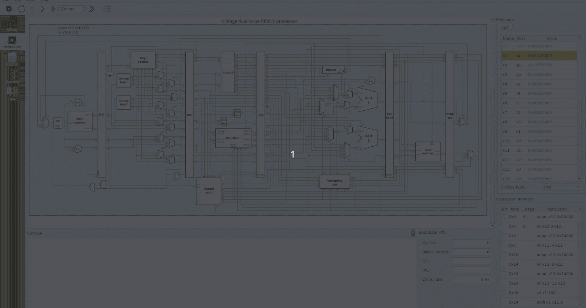

คู่มือการใช้งาน Ripes
Ripes คือโปรแกรมจำลองการทำงานของหน่วยประมวลผล (CPU) แบบ RISC-V พร้อมตัวแก้ไขโค้ดภาษาแอสเซมบลีและภาษา C — เหมาะสำหรับการเรียนการสอนวิชาสถาปัตยกรรมคอมพิวเตอร์

Ripes คืออะไร?
Ripes (อ่านว่า "ไรพ์ส") เป็นโปรแกรมโอเพนซอร์สที่ออกแบบมาเพื่อให้นิสิตเห็นการทำงานภายในของหน่วยประมวลผลแบบ RISC-V ได้อย่างเป็นภาพ ทั้งในระดับสัญญาณดิจิทัล วงจร datapath การทำงานของ pipeline และระบบหน่วยความจำแคช
สิ่งที่ใช้เรียนรู้ผ่าน Ripes ได้:
- วิธีที่โค้ดภาษาเครื่องถูกประมวลผลในสถาปัตยกรรมต่าง ๆ (RV32IMC/RV64IMC)
- การออกแบบแคช (cache) มีผลต่อประสิทธิภาพอย่างไร
- โค้ดภาษา C และ Assembly ถูกแปลเป็น machine code อย่างไร
- การติดต่อกับอุปกรณ์ภายนอกผ่าน memory-mapped I/O
วิธีติดตั้งและใช้งาน
วิธีที่ง่ายที่สุด — สำหรับโฟลเดอร์ Bundle นี้
ดับเบิลคลิกที่ไฟล์
เริ่ม.bat (หรือ START.bat) ในโฟลเดอร์เดียวกันกับเว็บนี้ จะเปิดทั้งคู่มือและโปรแกรม Ripes ให้พร้อมกัน — ไม่ต้องติดตั้งอะไรเพิ่ม
หรือถ้าต้องการใช้งานแบบอื่น:
วิธีที่ 1 — ในชุดนี้
เปิด Ripes.exe โดยตรง
โปรแกรม Ripes v2.2.6 ถูก bundle มาในโฟลเดอร์
ripes/ แล้ว — คลิกเพื่อเปิดได้ทันทีวิธีที่ 2 — ไม่ใช้ bundle
ใช้งานผ่านเว็บเบราว์เซอร์
เปิดเว็บ
ripes.me ได้จากเครื่องใดก็ได้ที่มีอินเทอร์เน็ต เหมาะสำหรับเครื่องที่ไม่ใช่ Windowsวิธีที่ 3 — เวอร์ชันล่าสุด
ดาวน์โหลดเวอร์ชันใหม่
หากต้องการอัปเดต Ripes ในอนาคต ดาวน์โหลดได้จากหน้า Releases บน GitHub (รองรับ Windows, macOS, Linux)
หาก Ripes เปิดไม่ขึ้น
บน Windows หากขึ้น error
msvcp140.dll ให้ติดตั้ง Microsoft Visual C++ Redistributable ก่อน ดาวน์โหลดได้ฟรีจากเว็บไซต์ Microsoft
การตั้งค่า C Compiler (ทำครั้งแรกครั้งเดียว)
หลังเปิด Ripes ผ่าน เริ่ม.bat ครั้งแรก หากกดเลือก Input type เป็น C แล้วขึ้นข้อความว่า "set a valid compiler" หรือ "compiler path is invalid" ให้ทำตามขั้นตอนนี้:
- ใน Ripes ไปที่เมนู Edit → Settings
- เลือกแท็บ Editor (หรือ Compiler)
- กดปุ่ม Browse ตรงช่อง Compiler path
- เลือกไฟล์นี้ในโฟลเดอร์ bundle:
ตัวอย่าง path เต็ม:toolchain\bin\riscv64-unknown-elf-gcc.exe...\ripes-tutorial\toolchain\bin\riscv64-unknown-elf-gcc.exe - เมื่อเลือกถูก ช่อง path จะเปลี่ยนเป็น สีเขียว
- กด OK ปิดหน้า Settings
- กลับไป Editor tab สลับ Input type เป็น C อีกครั้ง → เขียนโค้ดได้แล้ว
ต้องทำแค่ครั้งเดียว
Ripes จะจำการตั้งค่านี้ไว้ ครั้งต่อ ๆ ไปจะใช้ C ได้ทันทีโดยไม่ต้องตั้งใหม่ — เว้นแต่ย้ายโฟลเดอร์ bundle ไปที่อื่น (path เปลี่ยน) ก็ต้อง Browse ใหม่อีกครั้ง
ทำไม Auto-detect ไม่ทำงาน?
Ripes จะ scan PATH หา compiler เฉพาะตอนเปิด ครั้งแรกสุด (สถานะ settings ว่างเปล่า) เท่านั้น หากเคยเปิด Ripes แล้วและสลับไปแท็บ C สักครั้ง Ripes จะบันทึก path ว่าง ๆ ไว้และไม่ scan ใหม่อีก — จึงต้อง Browse เลือกเอง
โครงสร้างของโปรแกรม
หน้าจอ Ripes แบ่งเป็น 5 แท็บหลักที่ใช้งานบ่อย:
แท็บที่ 1
Editor
เขียนและแก้ไขโค้ด Assembly หรือ C พร้อมดู machine code ที่ถูก assemble แล้ว
แท็บที่ 2
Processor
ดูวงจร datapath ของ CPU พร้อมค่าใน register และสถานะของแต่ละ pipeline stage
แท็บที่ 3
Memory
สำรวจค่าในหน่วยความจำ ทั้งส่วน .text, .data และส่วนอื่น ๆ
แท็บที่ 4
Cache
ตั้งค่า cache ทดลองรูปแบบต่าง ๆ และดูสถิติ hit/miss
แท็บที่ 5
I/O
เชื่อมต่อกับอุปกรณ์จำลอง เช่น LED matrix, switches, ปุ่มกด, ผ่าน memory-mapped I/O
โปรเจกต์แรกของคุณ
หากเป็นครั้งแรกที่ใช้งาน Ripes แนะนำให้ทำตามขั้นตอนนี้:
- เปิด Ripes (เว็บหรือโปรแกรมที่ติดตั้งไว้)
- เลือกเมนู
File → Load Example → Assembly → Factorial - กดปุ่ม Reset เพื่อรีเซตสถานะของ CPU
- กดปุ่ม Auto-clock เพื่อให้ Ripes ประมวลผลทีละรอบสัญญาณนาฬิกา
- สังเกตการทำงานของสัญญาณในแท็บ Processor ค่าที่เปลี่ยนใน Registers และผลลัพธ์ในช่อง Output
ลำดับการเรียนรู้ที่แนะนำ
เริ่มจาก แท็บ Editor → Processor → Memory → System Calls → ตัวอย่าง Factorial → จากนั้นค่อยลงลึกเรื่อง Cache และ I/O
ข้อจำกัดที่ควรรู้
- Ripes รองรับเฉพาะ RV32/RV64 ส่วน I (integer), M (multiply), C (compressed) — ไม่ รองรับ floating-point hardware (F/D) หรือ vector (V)
- ไม่ใช่ simulator ที่ accurate ระดับ silicon — มีไว้เพื่อการเรียนการสอนเท่านั้น
- ไม่มี OS หรือ privileged mode — ไม่รองรับ system call แบบ Linux/Unix แต่มี
ecallแบบง่ายเพื่อพิมพ์ออกหน้าจอ